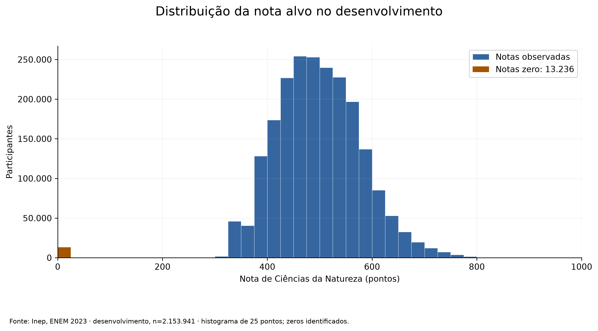
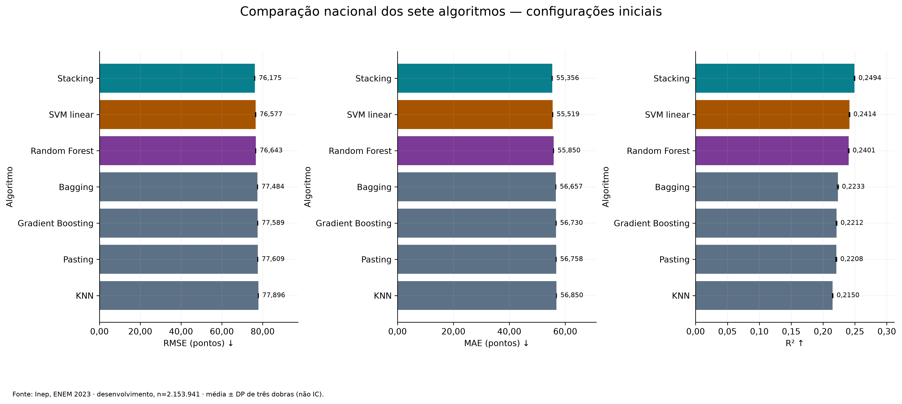
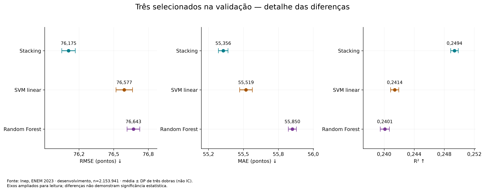
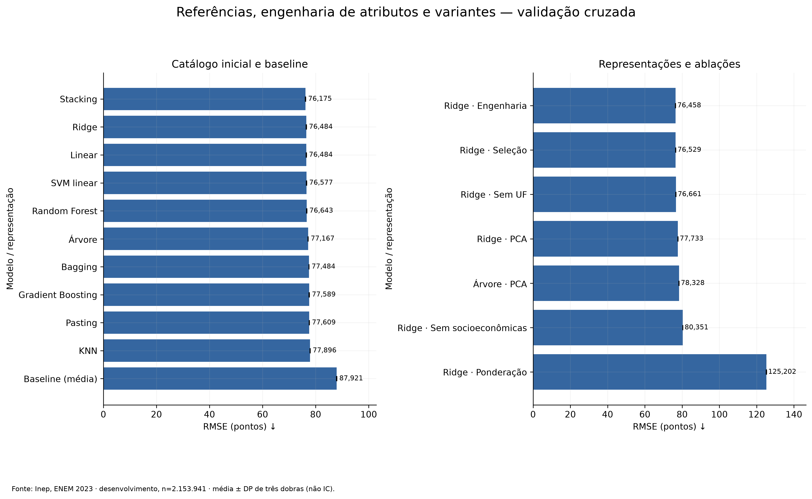
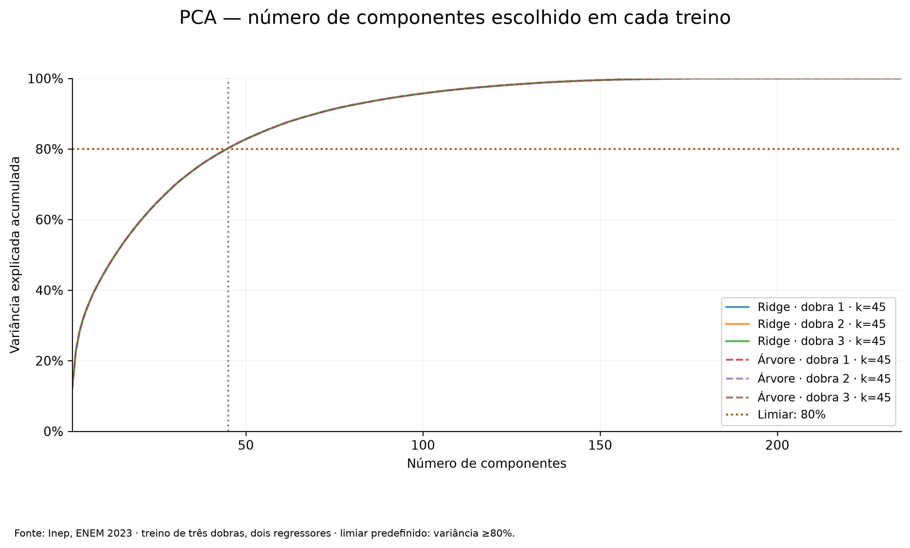
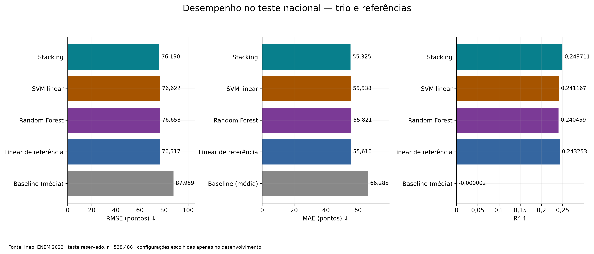
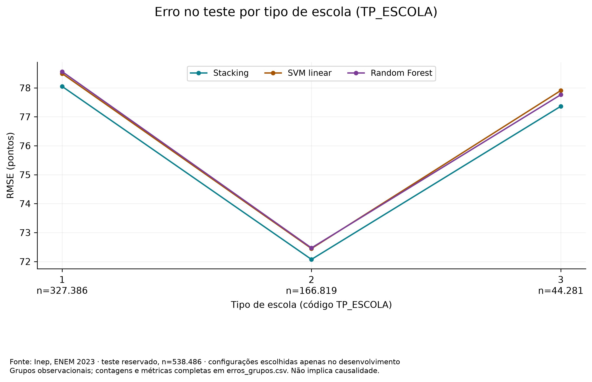
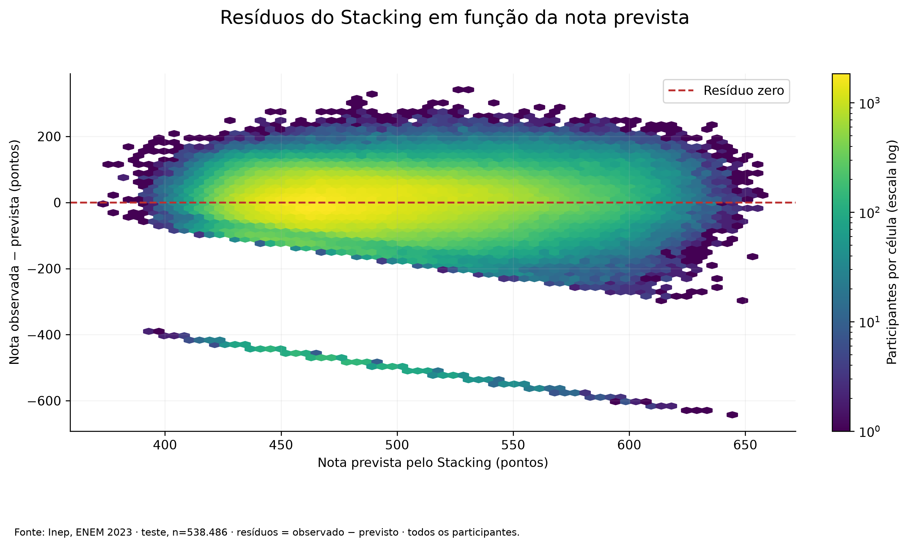

Desenvolvimento
Distribuição da nota alvo no desenvolvimento

Todos os 2.153.941 participantes do desenvolvimento; 13.236 notas zero preservadas. Ausência de nota não foi convertida em zero. Intervalos de 25 pontos.
PNG · 300 dpi · SVG
Tabelas: distribuicao_desenvolvimento · populacao
Desenvolvimento
Comparação nacional dos sete algoritmos — configurações iniciais

Mesmas três dobras e 40 entradas. Barras de erro: DP populacional entre dobras; não intervalos de confiança.
PNG · 300 dpi · SVG
Tabelas: comparacao_sete
Desenvolvimento
Três selecionados na validação — detalhe das diferenças

Seleção do Checkpoint 2 entre os sete. Eixos ampliados, sem barras partindo de zero; a seleção não usa o teste.
PNG · 300 dpi · SVG
Tabelas: trio_selecionado_inicial
Desenvolvimento
Referências, engenharia de atributos e variantes — validação cruzada

Inclui baseline e resultados sem melhoria. As variantes são comparações do modelo indicado, não novas buscas sobre o teste. Tempos completos estão na tabela.
PNG · 300 dpi · SVG
Tabelas: comparacoes_cv_completas
Desenvolvimento
PCA — número de componentes escolhido em cada treino

PCA centrado, ajustado apenas no treino de cada dobra. Ridge e árvore retiveram 45 componentes para alcançar pelo menos 80% da variância; as seis curvas quase coincidem.
PNG · 300 dpi · SVG
Tabelas: pca_variancia
Desenvolvimento
Modelos antes e depois das buscas

Cinco modelos, 12 configurações por modelo. Inclui o trio solicitado e os três melhores do catálogo ampliado.
PNG · 300 dpi · SVG
Tabelas: antes_depois
Desenvolvimento
Magnitude das melhorias nas buscas

Ganhos muito pequenos; a mudança do Stacking não demonstrou relevância prática ou estatística.
PNG · 300 dpi · SVG
Tabelas: antes_depois · todas_configuracoes
Desenvolvimento
Curvas das configurações finais

Treino e validação em cinco tamanhos, nas três dobras; receitas fixadas antes do teste.
PNG · 300 dpi · SVG
Tabelas: curvas_resumo · curvas_por_dobra
Teste
Comparação final no teste

Trio, baseline e linear nos mesmos 538.486 participantes. A linear tem RMSE menor que SVM e Random Forest.
PNG · 300 dpi · SVG
Tabelas: comparacao_teste
Teste
Validação versus teste

CV em três dobras e teste em modelos reajustados no desenvolvimento completo; populações de treino distintas.
PNG · 300 dpi · SVG
Tabelas: validacao_e_teste
Teste
Notas observadas versus previstas

Todos os participantes; mesma escala de células e linha da previsão perfeita para o trio.
PNG · 300 dpi · SVG
Tabelas: comparacao_teste
Teste
Distribuição dos resíduos

Intervalos comuns e todos os resíduos; a média global não descreve os erros extremos.
PNG · 300 dpi · SVG
Tabelas: comparacao_teste
Teste
Erros por faixa de nota

Faixas fixadas no desenvolvimento e tamanhos dos grupos. Erros maiores nas notas extremas.
PNG · 300 dpi · SVG
Tabelas: erros_grupos
Teste
Erros por tipo de escola

Códigos de TP_ESCOLA e contagens; associação observacional, sem inferência causal.
PNG · 300 dpi · SVG
Tabelas: erros_grupos
Teste
Erros por UF de aplicação

UF da prova não é necessariamente residência; contagens por UF na tabela.
PNG · 300 dpi · SVG
Tabelas: erros_grupos
Teste
Erros por faixa de renda

Categorias de Q006; contagens na tabela. Diferenças não determinam a capacidade individual.
PNG · 300 dpi · SVG
Tabelas: erros_grupos
Teste
Resíduos do Stacking em função da nota prevista

Todos os 538.486 participantes agregados em células, sem amostra ou corte de extremos. Resíduo negativo: superestimação. A dispersão remanescente limita a precisão individual.
PNG · 300 dpi · SVG
Tabelas: residuos_stacking_celulas